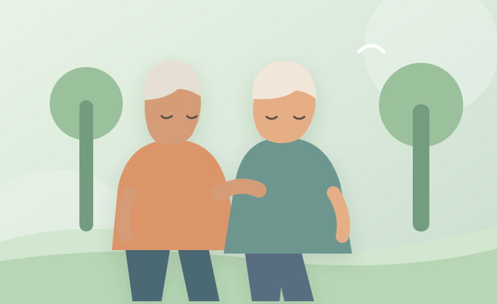

NUESTRA MISIÓN
Acompañar e informar
Facilitar a las personas mayores el acceso a información clara y útil sobre salud, alimentación, actividad física y bienestar emocional, fomentando la autonomía y el cuidado cotidiano.
Vida Plena nace como una propuesta para que las personas mayores encuentren información fácil de entender y un espacio donde su bienestar sea lo primero.
Conoce el proyecto ↓
Somos un proyecto web de orientación informativa para adultos mayores, sus familias y las personas que los acompañan.
Nuestra propuesta es sencilla: información organizada, palabras claras, imágenes reconocibles y una experiencia tranquila para navegar sin complicaciones.
Facilitar a las personas mayores el acceso a información clara y útil sobre salud, alimentación, actividad física y bienestar emocional, fomentando la autonomía y el cuidado cotidiano.
Ser un espacio digital cercano, accesible e inclusivo en el que cada persona mayor se sienta valorada, informada y capaz de participar activamente en su propio bienestar.
Escuchamos sin juzgar.
Pensamos en las personas.
Hablamos con sencillez.
Diseñamos para todos.
Vida Plena es un prototipo informativo, no una clínica ni un servicio profesional de atención médica. Los consejos no sustituyen la valoración de un especialista.
Cuéntanos qué información te gustaría encontrar.